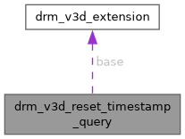

- Generated by
 1.15.0
1.15.0
|
XenevaOS
|
#include <v3d_drm.h>

Public Attributes | |
| struct drm_v3d_extension | base |
| __u64 | syncs |
| __u32 | offset |
| __u32 | count |
struct drm_v3d_reset_timestamp_query - ioctl extension for the CPU job to reset timestamp queries
When an extension DRM_V3D_EXT_ID_CPU_RESET_TIMESTAMP_QUERY is defined, it points to this extension to define a reset timestamp submission. This CPU job will reset the timestamp queries based on value offset of the first query. Moreover, it will reset the timestamp syncobj to reset query availability.
| struct drm_v3d_extension drm_v3d_reset_timestamp_query::base |
| __u32 drm_v3d_reset_timestamp_query::count |
| __u32 drm_v3d_reset_timestamp_query::offset |
| __u64 drm_v3d_reset_timestamp_query::syncs |